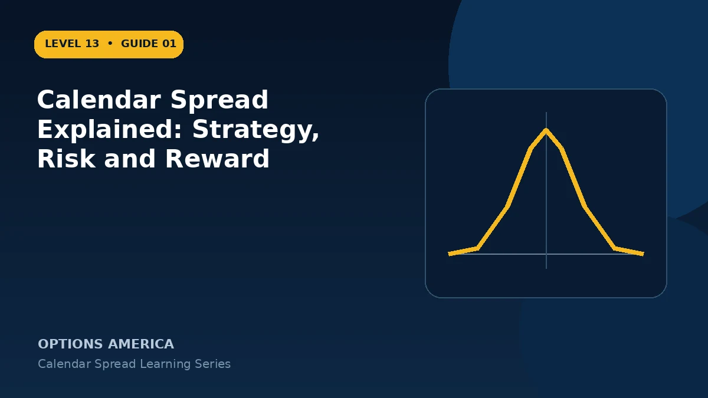

Learn how a calendar spread sells a near-term option and buys a longer-dated option at the same strike.
The two-expiration structure
A standard long calendar sells one near-term call or put and buys one later-dated option of the same type and strike. Quantity and contract multiplier normally match, but the expirations deliberately differ.
The target at front expiration
The position commonly performs best when the underlying is near the shared strike as the short option expires. The front option can lose much of its time value while the back option still retains time and volatility value.
Risk and reward
The opening debit is often the practical risk boundary if the position is maintained as a spread, but maximum profit and exact breakevens are not fixed at entry because the back option's value at front expiration depends on implied volatility.
Operational complexity
The position has two expirations, two volatility levels and changing Greeks. Early assignment, event timing, skew, term structure and decisions about the remaining back option all require a written plan.
A practical example
Sell a 30-day 100 call and buy a 60-day 100 call for a $1.80 debit. The goal is for price to be near $100 when the first call expires while the 60-day call retains value.
This simplified example uses selected price, time and volatility assumptions; live results will differ. Live option prices also reflect the underlying price, time decay, rates, dividends, liquidity and transaction costs. Greeks are theoretical estimates, not guarantees.
Frequently asked questions
Is a calendar neutral?
An ATM calendar may begin near neutral, while OTM calendars can be directional.
Is maximum profit known?
Not exactly, because back-month IV and value at front expiration are unknown.
Can calendars use puts?
Yes. Calls and puts can both build calendars.
Continue the Calendar Spreads cluster
Explore related guides: How to Build a Calendar Spread · How to Choose Calendar Spread Expirations · Calendar Spread Greeks: Delta, Gamma, Theta and Vega. For a structured sequence, use the free Level 13 – Calendar Spreads course.
Options involve risk and are not suitable for every investor. This material is educational and is not investment, tax or legal advice. Greeks are theoretical estimates, and contract terms and broker requirements can vary.